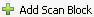
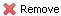
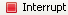
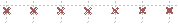
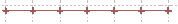

Table of Contents
- 1. Introduction
- 2. Experiment Window
- 3. Data Analysis Window
- 3.1. Getting Started with Data Analysis
- 3.2. File Manager
- 3.3. Batch Data Processing and Export
- 3.4. Algorithm Control
- 3.5. Plot
- 3.6. 1D Plot Controls
- 3.7. 2D Plot Controls
List of Figures
- 1.1. Gumtree-Kowari application icon
- 1.2. SICS Login Window
- 1.3. Title of Analysis Window
- 1.4. Title of Experiment Window
- 2.1. Experiment Window
- 2.2. Header Information
- 2.3. Scan Types
- 2.4. Icon of One-Dimensional Scan
- 2.5. One-Dimensional Scan
- 2.6. Icon of Two-Dimensional Scan
- 2.7. Multi-Dimensional Scan
- 2.8. Icon of Advanced Multi_Dimensional Scan
- 2.9. Advanced Multi-Dimensional Scan
- 2.10. Icon of Arbitrary Scan
- 2.11. Arbitrary Scan
- 2.12. Switch to Run Interface
- 2.13. SICS Command Block
- 2.14. Command Drop-down Menu
- 2.15. 'Save As' Wizard
- 2.16. File Selection Window
- 2.17. Run Time Estimation
- 2.18. Run tab
- 2.19. Validation Dialog
- 2.20. Interrupt Button at the Foot Bar
- 2.21. Run Status
- 2.22. Project Explorer Block
- 2.23. New Project Wizard
- 2.24. New Folder Wizard
- 2.25. Command Line Terminal
- 2.26. Instrument Status Table
- 2.27. Gadgets Block
- 2.28. Sidebar Control
- 2.29. SICS Interrupt Gadget
- 3.1. Analysis Window
- 3.2. File Manager
- 3.3. File Browser
- 3.4. Navigation Control
- 3.5. Efficiency Correction Control
- 3.6. Corrected Data
- 3.7. Integrated Counts
- 3.8. Scan Data
- 3.9. File Manager
- 3.10. Folder Selection Window
- 3.11. Export and Progress Bar
- 3.12. Algorithm Control
- 3.13. Frame Index
- 3.14. Scan Variable Values
- 3.15. Efficiency Correction Control
- 3.16. Geometry Correction Control
- 3.17. ROI on 2D Plot
- 3.18. Multiple ROI and Masks
- 3.19. ROI and Mask Control
- 3.20. Mask Properties Window
- 3.21. Corrected Data
- 3.22. Integrated Counts
- 3.23. Scan Data
- 3.24. Export Result Menu
- 3.25. Point Properties
- 3.26. Logarithm Axis
- 3.27. Data Control
- 3.28. Colour Selection Panel
- 3.29. Change Title
- 3.30. Pixel Properties
- 3.31. Linear and Logarithm Colour Scales
- 3.32. Data Control
- 3.33. Colour Scales
- 3.34. Select Colour Scale
- 3.35. Change Title
- 3.36. View Properties Control
- 3.37. Mask Control
List of Tables
Table of Contents
This user guide is prepared for users of the neutron scattering instrument Kowari - Residual Stress Diffractometer at the Bragg Institute, ANSTO. It can also be used as a reference by the instrument scientists of Kowari.
Hardware requirements
- Processor: 32-bit 1GHz or above CPU
- Memory: at least 1GB of free physical memory
- Storage: 1GB available space
- Video Card: support OpenGL V1.5
Software requirements
- Windows XP or Vista
- Java SE JRE or JDK version 5 or above
If your computer is on the NBI network, you can run Gumtree from a the file server. To do so you need to open the Explorer window, and map your X: drive with the remote folder: \\filer\scratch\xenv .
Now open the folder: X:\gumtree\releases\apps\kowari, double click on the file install.bat. This will install the Gumtree-Kowari application shortcut on your computer.
On your desktop, find the below icon and double click on it.
If your computer is on the ANSTO network, you can run Gumtree from the file server. To do so you need to open the Explorer window, map your X: drive with the remote folder: \\FIANNA\Sections\Bragg\Data_Analysis_Team\Share\xevn .
Open the folder: X:\gumtree\releases\apps\kowari, double click the file install.bat. This will install the Gumtree-Kowari application shortcut on your computer.
On your desktop, find the icon shown in Figure 1.1, “Gumtree-Kowari application icon” and double click on it.
Please contact Kowari instrument scientists or the software support team in the Bragg Institute for a copy of standalone version of Gumtree application.
Once you get the zipped application package of Gumtree, unzip the package into your local drive. In the target folder, you will find an executable file kowari.exe with an icon shown in Figure 1.1, “Gumtree-Kowari application icon”. Double click on it to run Gumtree.
If you are running remotely in NBI network, a window will pop up to ask you to login to SICS - the Instrument Control Sever, as shown in Figure 1.2, “SICS Login Window”. Please ask for the login information from the instrument scientists. If you do not want to login to SICS, simply tick the checkbox Do not ask to login again, and click on Cancel button.

If you are running on the NBI network, both the analysis window and the experiment window will be automatically opened. You can identify these windows by the titles. The title is located at the top left corner of the window. For example, Figure 1.3, “Title of Analysis Window” and Figure 1.4, “Title of Experiment Window”.


If you are running a standalone version of Gumtree, the above two windows will not automatically open at the beginning. To launch both windows, click on the button, and choose Kowari Experiment option.
To launch the data analysis window, click on the Launch button, choose Perspective option, then choose Kowari Data Analysis option.
To launch the experiment window, click on the Launch button, choose Perspective option, then choose Kowari Experiment option.
Table of Contents
The Kowari Experiment Window is a graphical user interface to do neutron scattering experiments on Kowari instrument. It consists of four window parts, the Project Explorer, the Scan Design & Run , the Command Line Terminal, and the Instrument Status Table. These applications can help user to do both instrument control and scan experiments.
To launch the Experiment Window, click on the Launch button. Choose Perspective option, then choose Kowari Experiment option. Figure 2.1, “Experiment Window” shows an snapshot of the Experiment Window.

The Gumtree Scan Experiment application is a tool to simplify designing and carrying on neutron scattering experiment on Kowari instrument. To quickly getting started with this application interface, please follow the procedure described in this section.
Before you want to do a scan experiment on Kowari, you need to make sure the hardwares required in your experiment are installed and the whole instrument is well aligned. These hardwares include the sample, the sample holder, and the sample environment facility. Your instrument scientist will help you with this. You need to work out how to configure the instrument to best suit your experiment requirements with the instrument scientist as well.
Once your experiment sample has been planted into the instrument, you need to measure the detail positions of the sample on the sample stage. Then you need to come up with a plan on how to perform the neutron scattering scan. Drawing the plan on a plot can help you to work it out.
Use the Design tab to create the scan tasks.
Input the sample name and sample description in the Header Information Block in the Design tab, as shown in Figure 2.2, “Header Information”. This information will be used to label your sample in the NeXus data file
To add more scans, click on the button . A new scan widget will show up at the bottom of the Design tab. The new scan is by default the same type as the one above it.
To select the scan type, click on the drop down menu button . A list of scan types will show up, as seen in Figure 2.3, “Scan Types”. Simply choose the one you need, then the task block will change to the selected type. Please be careful of changing the type, because once you changed the type of a scan block, the editing previously done in this block will get lost. You will have a blank block in a newly selected type.
To use the Design tab to create a scan, you need to learn the meaning of the following arguments.
variable : the scan variable. It is an instrument component, which can be a motor or an sample environment controller e.g., temperature controller.
start : the start value for the scan variable.
finish : the finish value for the scan variable.
points : the total number of points in the scan.
mode : the histogram memory mode. Available options are, time and count. If you set the mode to time, the histogram server will stop when the acquisition time reaches the number of seconds set with the preset argument. If you set the mode to count, the histogram server will stop when the beam monitor counts reaches the number which is set by the preset argument.
preset : the acquisition duration at each scan point, this is in seconds if the mode is time, or counts if the mode is count.
A one-dimensional scan means only one variable is changed in the scan. A graphical description of a one-dimensional scan is in Figure 2.4, “Icon of One-Dimensional Scan”
Use the Multi-dimensional Scan block in the Design tab for this type of scan. For example in Figure 2.5, “One-Dimensional Scan”, the scan will perform like this: drive sx motor to positions, 0, 1, 2 and 3. At each position, do a histogram memory acquisition for 120 seconds. The single_file choice helps to save all the data records into the same file. If you choose multiple_files option, each data record will be saved into a separate file.
The multi-dimensional scan means more than one variable is changed in the scan. The way of these variables get changed is in a matrix way. A graphical description of such scan is shown in Figure 2.6, “Icon of Two-Dimensional Scan”, which is a two-dimensional special case.

Use the Multi-dimensional Scan block in the Design tab to setup this scan. For example in Figure 2.7, “Multi-Dimensional Scan”, it will drive sx and sy motors to the following coordinate positions, (0, 0.1), (0, 0.2), (0, 0.3), (1, 0.1) ..., (3, 0.3), totally 12 positions. At each position, do a histogram memory acquisition for 120 seconds. There are totally 12 data records will be generated. If you choose the single_file option, all data will be saved into the same file. If you choose the multiple_files option at the line for sx, there will be 4 files generated. Each file will contain 3 data records. If you choose the multiple_files option at the line for sy, there will be 12 records generated, with 1 data record in each file.
An advanced multi-dimensional scan is a scan that has one or more dimensions. And in each of the dimensions, you can change more than one variable. Use the Advanced Multi-dimensional Scan block in the Design tab to setup this scan. A graphical description of this scan is shown in Figure 2.8, “Icon of Advanced Multi_Dimensional Scan”.
For example in Figure 2.9, “Advanced Multi-Dimensional Scan”, the scan has two dimensions. In the first dimension, it moves motor sx and sy at the same time for each scan point. These coordinates are (0, 0.1), (1, 0.2), (2, 0.3) and (3, 0.4). For each coordinate of these positions, it will do a single dimensional scan on som. The total scan positions in this example is 44. If you choose the single_file option, all data will be saved into the same file. If you choose the multiple_files option at dimension 0, there will be 4 files generated. Each file will contain 11 data records. If you choose the multiple_files option at dimension 1, there will be 44 records generated, with 1 data record in each file.

The Arbitrary Scan is a scan that you can change arbitrary variable in the instrument. A graphical description of such scan is shown in Figure 2.10, “Icon of Arbitrary Scan”.

You need to define each position separately. For example, there are 3 scan positions. In each position, you change arbitrary parameters.
To run the scan, change to the Run interface. To do so, click on the Run tab at the bottom of the Design tab, see Figure 2.12, “Switch to Run Interface”. You will get Run interface. More information on this interface is provided later in this chapter. To run the script, simply click on the Run button.

Once you click on the Run button, the status bar on top of the Run
block will change colour and show  . Meanwhile the timer at the top right will start,
for example,
. Meanwhile the timer at the top right will start,
for example,  . When one line of the script gets processed, the
colour of that line is changed to yellow. When the script processing is
complete, the status label becomes
. When one line of the script gets processed, the
colour of that line is changed to yellow. When the script processing is
complete, the status label becomes  and the timer stops.
and the timer stops.
To view scan data and data reduction result, please use the Kowari Analysis Window. If the analysis application window is open, it will pick up the newly generated NeXus data and load it into the File Management. To run the analysis algorithm, simply click on the file. The algorithm will start processing and the results will get shown in the plotting area. For more information about data analysis, please read Chapter 3, Data Analysis Window.
To add SICS command block, click on the button  . An empty SICS command block will appear. To add
new commands in the block, click on the button. As shown in Figure 2.13, “SICS Command Block”, there are two types of commands, the
Drivable command and Script
command.
. An empty SICS command block will appear. To add
new commands in the block, click on the button. As shown in Figure 2.13, “SICS Command Block”, there are two types of commands, the
Drivable command and Script
command.
Use Drivable command to move a motor to certain position. Please select the motor name in the drop down list, and set the target position value.
Use Script command - to add SICS Tcl commands. You can add as many as possible lines of Tcl code to the text box.

Click on the button, a drop down menu pops up, as show in Figure 2.14, “Command Drop-down Menu”. You can use this menu to change the type of the command, delete it, or move it.
In this section, we will introduce the advanced functions of the Design tab.
You can move a scan up or down. To move a scan up, click on the drop down menu button , select . The scan will get switched with the scan above it. To move a scan down, select in the drop down menu. The scan will get switched with the block blow it.
To remove a scan, click on the drop down menu button , select . The scan will be removed.
You can save the group of scans designed in the Design tab to a file in the Gumtree Project Folder and load it.
To save the group of scans, click on the
 button. A Save As wizard
window will pop up, as shown in Figure 2.15, “'Save As' Wizard”.
You need to choose a project folder to store your file and provide a
file name. Click OK button to confirm. By
default, the extension name of the file is
*.wml. After the file is saved, you can find it
in the Project Explorer.
button. A Save As wizard
window will pop up, as shown in Figure 2.15, “'Save As' Wizard”.
You need to choose a project folder to store your file and provide a
file name. Click OK button to confirm. By
default, the extension name of the file is
*.wml. After the file is saved, you can find it
in the Project Explorer.To load the saved group of scans, click on the
 button. A File Selection
window will pop up, as shown in Figure 2.16, “File Selection Window”. You can
choose a file with an extension name of *.wml.
The File Selection window allows you to locate any file in your file
system.
button. A File Selection
window will pop up, as shown in Figure 2.16, “File Selection Window”. You can
choose a file with an extension name of *.wml.
The File Selection window allows you to locate any file in your file
system.Another way to load a saved scans is by drag and drop. In the Project Explorer block, locate the file you want to load. Simply drag and drop it into the Design tab. The file will be loaded. If the target file is not a scan file, an error message box will pop up.

The Design tab helps you to estimate how much time your group of scans is going to take. The text box that shows the estimation is located at the bottom left corner of the Design tab, as shown in Figure 2.17, “Run Time Estimation”.
If the scan modes of your tasks are time, the estimation will provide a value in time units. For example, 101 minutes or 15 hours.
If the scan modes of your tasks are count, the estimation will provide a value in counts. For example, 20,000 counts. To achieve the same counts, it will take different amount of time in different experiments.
If the scan mode of your tasks are a combination of time and count, the estimation will be time plus counts. For example, 3 hours and 10,000 counts.
To run the scan, you need to change to the Run tab. To do so, click on the Run tab at the bottom of the Scan Design & Run. The Design tab disappears and is replaced with the Run tab, as seen in Figure 2.18, “Run tab”. You can check the Tcl script that is going to be sent to SICS to run. Before you want to run the script, it is recommended to validate the script first. To validate the script, send the script to a validation server by clicking on the Open Validator button. To run the script, simply click on the button.

The Tcl script generated by the Design tab will show up in the text area of the Run tab. Before you run the script, please visually check the script and validate it. Validation is done by sending the script to SICS running in simulation mode. To do the validation, click on the Open Validator button. A connection window will pop up to login in to SICS, as seen in Figure 2.19, “Validation Dialog”. Simply input your SICS login name and password and click on Validate. The script should only take a few seconds to run. If there is a problem in the script code, the validation window will let you know. Otherwise it will tell you that the script validation has passed.
To run the Tcl Script, click on the button. Gumtree will send the Tcl script to SICS to run.
When SICS is running the scan script, the button changes to an  button. You can use this button to stop the script.
There are three buttons available in the Gumtree application window.
The most convenient way of stopping running of the script is to use the SICS Interrupt Button in the Sidebar. In every Gumtree window, there is a Sidebar located at the right side of the window. Single click on the button will stop SICS. To learn more about the Sidebar, please read Section 2.9.2, “SICS Interrupt”.
Once the script is running, the Run button in the Run tab will change to an button. You can use this button to stop the script.
There is an button in the status bar at the bottom of the Scan Experiment Window, as shown in Figure 2.20, “Interrupt Button at the Foot Bar”. You can use this button to stop the script.
Once you click on the Run button, the status bar on top of the Run
block will change colour and show . Meanwhile the timer at the top right will start,
for example, . When one line of the script gets processed, the
colour of that line is changed to yellow. When the script processing is
complete, the status label becomes and the timer stops.
The Project Explorer is an application window for you to manage saved scan tasks. It is located at the top left of the Experiment Window. Figure 2.22, “Project Explorer Block” shows an example of the tree structure of the Project Explorer. You can copy and paste any type of file to the folders in the Project Explorer. However you can only load two types of files into the Experiment Window. One is *.wml files, which can be loaded into the Design tab. The other type is *.tcl files, which can be loaded into the Run tab.
To create a new project, right click on the Project Explorer Block, an application menu will pop up. Choose New -> Project option. A project creating wizard will pop up. Another way to show the wizard is to use the application window menu File -> New -> Project. In the wizard window, please choose the project type, General -> Project, as shown in Figure 2.23, “New Project Wizard”. Then click on Next. In the next window, simply type in a name of the project, then click on Finish.
To add a new folder in a project, simply right click in the Project Explorer. In the pop up menu, choose New -> Folder option. A folder creation wizard window will pop up. Choose the project root or a parent folder where you want to put the new folder, and give a name to the new folder. Then click on Finish.

You can drag and drop a *.wml file into the Design tab. The *.wml files are saved by the Design tab at a previous time. Simply drag the file and drop it into the Design tab. The file will be loaded back by the Design tab. The Design tab will create the graphical scan commands accordingly.
You can drag and drop a *.tcl file into the Tcl Runner Block. The *.tcl files are Tcl script files. Once a *.tcl file is loaded into the Script Runner, you can either do a validation on the script or start running the script by clicking on the Run button.
To send a SICS command with the Command Line Terminal, simply type a SICS command into the Input text box. Then hit the Enter key. To read the command history, use the CTRL + Space key combination.
Warning
Be very careful! You can put the instrument out of alignment or disrupt your experiment using this terminal.

The Instrument Status Table is located at bottom right of the Experiment Window. You can use this table to monitor certain parameters of the instrument. You can also change the parameter values by using this table.
Warning
Be very careful! You can put the instrument out of alignment, or disrupt your experiment using this table.
The columns of the Instrument Status Table are:
Device column: the sics name of the parameter.
Status column: the status of the device. It can be running, or empty. Once you choose to drive the device, the status will change to running. It will change back to empty once the drive is done.
Current column: the current position or value of the device.
Target column: the target position or value of the device. You can use this column to drive the device or change the value. To do this, click on the Target column of the device. Type in the new value, then hit ENTER key.

In every Gumtree application window, there is a Sidebar. There are convenient Gadgets available in the Sidebar. Figure 2.27, “Gadgets Block” shows the Reactor Information gadget and Sics Interrupt gadget.
You have two ways of showing or hiding Gadgets Sidebar.
Use the arrow button to fold the Sidebar.
Use the Sidebar icon in the Gumtree quick launch menu bar to hid the Sidebar, as seen in Figure 2.28, “Sidebar Control”.

To quickly locate the SICS interrupt widget, find the button as shown in Figure 2.29, “SICS Interrupt Gadget” in the Gadgets block. Click on this SICS Interrupt button will send an interrupt signal and stop any action by the SICS server.
Warning
Hitting the interrupt will not immediately stop motion. A motor will go into its deceleration routine and come to rest as quickly as possible without damaging the instrument.

Table of Contents
- 3.1. Getting Started with Data Analysis
- 3.2. File Manager
- 3.3. Batch Data Processing and Export
- 3.4. Algorithm Control
- 3.5. Plot
- 3.6. 1D Plot Controls
- 3.7. 2D Plot Controls
The Kowari Data Analysis Window is a customised graphic user interface for reducing raw data acquired by Kowari. It consists of 4 parts, File Manager, Batch Data Processing and Export, Algorithm Control and Plot. The data is in binary NeXus format and contains raw data acquired in a Scan done using the Experiment Window.
To launch the analysis window, click on the Launch button, choose Perspective option, then choose Kowari Data Analysis option.
A standard Kowari Data Analysis procedure includes the following steps: efficiency correction, geometry correction, 2θ integration and curve fitting. Please contact your instrument scientist for detail information about this procedure.
On the top left part of the window, there is the File Manager, as shown in Figure 3.2, “File Manager”.

Use button  to pop up the file selection window. You can get the same window popped
up by clicking on the drop down menu and choose
to pop up the file selection window. You can get the same window popped
up by clicking on the drop down menu and choose  option.
option.

By default, the File Browser will use a filter to show all the files that have an extension name of '*.hdf'. You can also set the filter to show all files by setting the Files of type option to '*.*'. You can use the file browser window to select multiple files at the same time. Then click the Open button to confirm your selections. Once one or more files have been selected, the analysis application will pick the last file in the selections and run the analysis algorithm on it. The results of the analysis algorithm will be plotted in the Plot area of the Analysis Window.
Algorithm Control is located in the bottom left of the Analysis Window. Please read the following items to tune the algorithms. If you need detail information about the algorithm parameters, please read Section 3.4, “Algorithm Control”.
A frame is defined as a single detector histogram which is a 2-dimensional array of neutron count data and has been taken at a single point in a multi-point scan. The number of frames equals the number of scan points.
By default when you first run the algorithm on a NeXus data file, it will pick the first Section 3.1.2.1, “Frame”frame of data to process. The correction result will show up in the uppermost Plot. It is a two-dimensional plot of the detector reading after efficiency correction and geometry correction, if you have enabled these corrections. If there is more than one frame in the data file, you need to use the widgets in Figure 3.4, “Navigation Control” to navigate through the frames.
More detail can be found in Section 3.4.3, “Navigation Control”
Figure 3.4. Navigation Control
The jump to drop down list shows all the frame IDs. You can select to analyse on a frame by selecting an ID.
The step navigation buttons will help you to move forwards or backwards in the frame sequence.
The scan variable drop down list shows all the scan variable positions where each frame of data is taken. You can analyse on a frame by selecting its scan variable position.
The instrument scientist will prepare the efficiency map of the detector ahead of time. Please ask your instrument scientist for the location of this file. Once you know where to find this file, you can use the widgets in Figure 3.5, “Efficiency Correction Control” to load the efficiency file. Enable efficiency correction by selecting the checkbox.
For more information on efficiency correction, please read Section 3.4.4, “Efficiency Correction Control”.
The Plot area is the right part of the window. There are three plots that show the results of the data reduction and analysis.
To read more information about how to control Plot, for example zoom see Section 3.7, “2D Plot Controls”.
The first Plot is a two-dimensional intensity plot that shows the corrected detector counts. If you have chosen to enable efficiency correction and geometry correction, it will plot the intensity data after these corrections. In the example of Figure 3.6, “Corrected Data”, both the vertical and horizontal axes are the physical dimensions of the detector. The colour of each pixel in the plot represents the neutron count reading in that location of the detector.
The second Plot consists of two plots. The vertically integrated detector counts are shown as points, and a fit to these points is shown as a curve. If you have applied a Region of Interests (ROI) in the intensity plot above, the algorithm will do the integration only in the masked area.

The third Plot shows the aggregated scan data. By default it shows the intensity integration of the whole detector vs scan variable plot. If you need more details about the result plots, please read Section 3.5, “Plot”.
As shown in Figure 3.2, “File Manager”, users can manage the data source files in this File Manager. This section details how to use the file manager to select files for analysis.
You can use the button or drop down menu to open a file selection window as shown in Figure 3.3, “File Browser”. Once one or more files has been selected, they will be
imported into the File Manager. The names and locations of these files
will be shown. By default, the analysis algorithm will use the last file in the selection as
the input file and automatically Analysed and Plotted.
You can use this button to add one or many data files to the File Manager. However, only one file gets processed at a time and its result is plotted. The file that is processed gets highlighted, as shown in Figure 3.9, “File Manager”.

Use the  button or drop down menu
button or drop down menu  to open a folder selection window as shown in Figure 3.10, “Folder Selection Window”. Once a folder has been selected, click on the
OK button to confirm your selection. This will import all NeXus files
in that folder to the File Manager. The last file in the selected
folder will be automatically Analysed and Plotted.
to open a folder selection window as shown in Figure 3.10, “Folder Selection Window”. Once a folder has been selected, click on the
OK button to confirm your selection. This will import all NeXus files
in that folder to the File Manager. The last file in the selected
folder will be automatically Analysed and Plotted.

To Analyse a file, select that file by a single click. The selected file is highlighted and Analysis starts. You can only select one file at a time, hence only one file is Analysed and Plotted. You can use the Arrow Up or Arrow Down keys on your keyboard to navigate through the files in the File Manager.
To remove a file from the File Manager, you need to select the file. Please read Section 3.2.3, “Select an Input File” on the detail. Use button  or drop down menu to remove the selected file. After removal, the file located immediately
below it in the File Manager will be highlighted and Analysed and Plotted. If there is no
file below, the file above will be selected, Analysed and Plotted. If after removal, there
is no file in the File Manager, Plot will be empty. Since it does not support
multi-selection, you cannot remove multiple files unless you choose to Remove All
Files.
or drop down menu to remove the selected file. After removal, the file located immediately
below it in the File Manager will be highlighted and Analysed and Plotted. If there is no
file below, the file above will be selected, Analysed and Plotted. If after removal, there
is no file in the File Manager, Plot will be empty. Since it does not support
multi-selection, you cannot remove multiple files unless you choose to Remove All
Files.
Use the  button or drop down menu
button or drop down menu  to remove all files in the File Manager. A
confirmation window will pop up. If confirmed, all files are removed. Plot will be
emptied.
to remove all files in the File Manager. A
confirmation window will pop up. If confirmed, all files are removed. Plot will be
emptied.
If Gumtree-Kowari is connected to SICS it will monitor any new NeXus file created or modified by the SICS server. To learn about how to connect to SICS server, please read Section 1.3, “Install and Run Gumtree-Kowari”. When a new NeXus file is created, the File Manager will automatically read the file in. By default the files in the File Manager are sorted in a descending sequence. The new file usually has a larger numeric ID, so that it will be put on top of the file list in the File Manager. To Analyse and Plot the new file, simple click on it to select it.
If the selected file is modified by SICS, Gumtree-Kowari will detect this and read the modified file. If the frame entry in the file gets changed, Gumtree will re-run Analysis and Plot on the new result. If there is a new frame entry appended to the file, Gumtree will pick up the entry and Analyse and Plot it.
The Export All (batch data processing and save) button and a progress bar are located in the center left of the window, as shown in Figure 3.11, “Export and Progress Bar”.

You can reduce and export all files loaded into the File Manager. Using Export All, the NeXus data files are read sequentially and processed with the reduction algorithm. The one-dimensional vertically integrated result curves are saved into XYSigma ASCII files. For each NeXus file, there is one XYSigma file created. There is several lines of header information in the file to show the metadata. Each curve also follows a couple of header lines to tell the scan variable information.
To do batch processing, click on the  button. A Folder Selection Window will pop up.
After you confirm your selection, Gumtree will begin the process. The name of the exported
files are the same as the NeXus files e.g. KWR1234567 but with an appended suffix and file
extension. If efficiency correction is enabled in the Algorithm
Control, it will append '_e' to the export file name. If geometry correction is
enabled, it will append '_g' to the export file name. If there is a mask region applied, it
will append the vertical boundary information of the region to the file name, e.g.
'_-137.0_125.0' means vertical region from -137.0 mm to 125.0 mm. The extension will be
*.xyd. An example of the file name is: KWR0003415_eg_-137.0_125.0.xyd, with efficiency
correction, geometry correction and mask enabled. Data can also be saved one file at a time.
See Section 3.5.4, “Save Scan Data”
button. A Folder Selection Window will pop up.
After you confirm your selection, Gumtree will begin the process. The name of the exported
files are the same as the NeXus files e.g. KWR1234567 but with an appended suffix and file
extension. If efficiency correction is enabled in the Algorithm
Control, it will append '_e' to the export file name. If geometry correction is
enabled, it will append '_g' to the export file name. If there is a mask region applied, it
will append the vertical boundary information of the region to the file name, e.g.
'_-137.0_125.0' means vertical region from -137.0 mm to 125.0 mm. The extension will be
*.xyd. An example of the file name is: KWR0003415_eg_-137.0_125.0.xyd, with efficiency
correction, geometry correction and mask enabled. Data can also be saved one file at a time.
See Section 3.5.4, “Save Scan Data”
The progress bar represents the processing progress in two different modes.
File process mode. The Progress Bar shows the progress of processing all frames in a single NeXus file, when you choose to run the algorithm for a single file.
File export mode. The Progress bar shows the progress of exporting all files in the File Manager.
In this section, you will find information about how to tune the analysis algorithms. Figure 3.12, “Algorithm Control” shows an overview of the Algorithm Control.
There are limited types of graphical widgets in Algorithm Control.
They are checkbox, drop down list, file selection widget, navigation button and mask
manager. Except for the navigation buttons, all changes to the above widgets need a
confirmation click on the  button. After the file is Analysed and Plotted, the
Apply button is greyed out. Once a change is made to the control
widgets, the Apply button is highlighted. A single clicking on this
button will apply all the changes made and start Analysis and Plot. Navigation buttons are
exceptions, they do not need confirmation.
button. After the file is Analysed and Plotted, the
Apply button is greyed out. Once a change is made to the control
widgets, the Apply button is highlighted. A single clicking on this
button will apply all the changes made and start Analysis and Plot. Navigation buttons are
exceptions, they do not need confirmation.
In the NeXus file, the detector count data are accompanied with corrected data, which is corrected for count binning artefacts generated by the detector and its electronics. The corrected data is produced by the histogram server which uses dithering to balance counts in adjacent wires on the detector. By default, uncorrected data is Analysed and Plotted. Consult with your instrument scientist if you need to use the corrected data.
To use the wire corrected data, click to select the checkbox  .
.
There are three ways of navigating through the Section 3.1.2.1, “Frame”frame sequence in the NeXus file.
Use frame index
The index of each frame will show up in the drop down list in Figure 3.13, “Frame Index”. Choose the index of a frame that you want to show by a single click in the drop down list.
Use navigation buttons . You can navigate backwards or forwards along the frame sequence with these buttons.
Use scan variable position
The value of the scan variable for each frame will show up in the drop down list in Figure 3.14, “Scan Variable Values”. You can choose to show a frame by selecting the scan variable value of that frame.

Usually the instrument scientist will prepare the efficiency map of the detector before you arrive and put it in your proposal directory. Please consult with your instrument scientist for the details of this file. To use the efficiency map file, you can use the widgets shown in Figure 3.15, “Efficiency Correction Control” to load it. Click on the file selection button , to pop up a file selection window. Once the efficiency map file is selected, its path gets inputted into the text box. You can type the path of the file in the text box as well.

You can enable or disable efficiency correction by changing selection of the checkbox.
Click on the button to apply the change.
The geometry correction algorithm used in the analysis is to project a flat detector
histogram onto a spherical surface. Please consult with your instrument scientist if you
need to apply the geometry correction algorithm. To enable geometry correction, simply click
to select the checkbox in Figure 3.16, “Geometry Correction Control”. Then click on
button to apply the change.
In the analysis algorithm, you can put a series of mask as a single parameter to control selection of the detector histogram data. There are two types of masks, inclusive and exclusive. Inclusive masks are also called a Region of Interest, or ROI. If an ROI has been applied to the histogram data, only pixels included in the ROI will be considered in the analysis algorithm. Exclusive masks are called masks. If a mask has been applied to the histogram data, the pixels in the mask region will not be considered in the analysis algorithm.
There are two ways of inputting ROI or masks into the algorithm. One is to draw regions on the two-dimensional intensity plot in the plotting area. The other is to use the Masking Properties Window to define regions.
To draw an ROI on the two-dimensional intensity plot, use ALT + Left Mouse Button combination to draw a rectilinear region on the plot. As shown in Figure 3.17, “ROI on 2D Plot”, the colour of the ROI is green. To resize the ROI, move your mouse to the boarder of the region. The cursor becomes drag-able. You can drag the boarder to change the width or the height. To remove, move your mouse onto the ROI until the region gets focus. Push the DELETE key on your keyboard to remove.
To draw a mask on the two-dimensional intensity plot, use SHIFT + ALT + Left Mouse Button combination. The colour of the mask region is red. Other properties of the mask are the same as the ROI.

You can draw as many ROI and masks on the intensity plot as you like. Figure 3.18, “Multiple ROI and Masks” shows an example of drawing one ROI and two masks on the intensity plot.

The other way of apply region selections is to define ROI and mask regions in the Masking Properties Window. To open this window, click on the button in the algorithm control widget shown in Figure 3.19, “ROI and Mask Control”.
Figure 3.20, “Mask Properties Window” shows an example of masking properties window.
To add a new mask, click on the
button, a new mask item will show up in the Mask
list. You can edit the position and size of the region by changing the
coordinates of the mask in the Points widget. You can define as ROI
or mask by switching between Inclusive and
Exclusive options widget. You need to click on the
Apply button to confirm any change.To change the name of the region, simply type in the Name text box.
To remove a mask, click on the mask item. Then click on the
button.To remove all masks, click on the
button.To save all the masks to a file, click on the
 button. Pick a path and filename, then click on
SAVE. All the masks drawn on the plot will be saved into the file
in XML format.
button. Pick a path and filename, then click on
SAVE. All the masks drawn on the plot will be saved into the file
in XML format.To load saved masks, click on the
 button. Choose a file saved previously, then click
OPEN.
button. Choose a file saved previously, then click
OPEN.
The following logic describes how the regions define the selections of the histogram data.
If there is no ROI or mask region, all pixels in the detector histogram will be used.
If only masks exist, all pixels but the masked ones will be used.
If only ROI exist, only pixels in the ROI regions will be used.
If both ROI and masks exist, pixels in the ROI regions but not in the mask will be used.
There are three types of results for the Gumtree-Kowari data analysis, Corrected, Reduced and Analysed. In this section, we talk about these results.
The first Plot shows the Corrected result. It is a two-dimensional detector histogram data plot. If you have chosen to enable efficiency correction and geometry correction, it will plot the intensity data after these corrections. Figure 3.21, “Corrected Data” shows this Plot. The vertical and horizontal axes are the physical dimensions of the detector. Units of the axes are mm.
The colour of each pixel in the plot is coded by the number of neutron counts. The colour scale is located to the right of the plot. Readings from low to high coded by colors from dark to light.
To learn more information about the plot control, please read Section 3.7, “2D Plot Controls”.
The one-dimensional reduction result is located in the second plot. It is the integration of the corrected histogram data in vertical direction. The horizontal axis of the curve has been converted into 2θ values. Figure 3.22, “Integrated Counts” shows the integration result with a fitting curve. The integration result is plotted in Diamond markers and the fitting result is in a curved line. You can choose different marker shape for the plot. Please refer to Section 3.6, “1D Plot Controls”.

The analysis result of the algorithm will show up in the third plot in the plotting area. The horizontal axis of the plot is always the scan variables. For example, Figure 3.23, “Scan Data” shows the peak positions of the fitting of the frames vs the scan variable values.

All features in the 1D curve plot are supported by this Plot. However there are additional features for this plot.
Jump to a frame
Double click on a point to pick the histogram frame that has a scan variable value as your selection. The algorithm will pick the frame as input and start processing. As a result, in the first plot of the plotting area, it will show the correction result of that frame. In the second plot, it will show the reduction result of that frame.
You can save different analysis results in multiple formats. The supported file formats are binary (HDF5), ASCII(3 columns), and XML. There are different advantages in saving into different formats.
HDF (Binary HDF5) format is a popular format in neutron scattering science. The NeXus data files created in Kowari experiments are also in HDF5 binary format. The data saved in HDF5 format are compressed, which helps to save storage space. Such file that contains analysis result can be easily read back by Gumtree applications.
XYSigma (ASCII, with 3 columns table) format is more human-readable. This format is only supported for exporting one-dimensional curve data. The 3 columns are the AXIS, the VALUE, and the ERROR respectively.
XML format is available for both the two-dimensional result and one-dimensional curve result. The advantage of using this format is that it easily holds the metadata and it is human readable.
To choose to save the result in your local drive, click on the Export item in the plot menu, as shown in Figure 3.24, “Export Result Menu”. Then choose the file format you want to save. A file selection window will show up. Choose the folder and give a name to the file, then click Save.

The following features are about features supported by a one-dimensional curve plot, for example the reduction result plot or the analysis result plot. To learn about the meaning of the 1D results, please read Section 3.5.2, “Integrated Counts” and Section 3.5.3, “Scan Data”.
To zoom in certain region of the 1D plot, simply push down the left mouse button and draw a rectilinear box from top left to bottom right on that region. You can use this action to zoom in up to possible zooming levels.
To zoom out to the original level, push down the left mouse button and move
it up or left. Another way to zoom out is to click on the  button at the top left corner of the plot.
button at the top left corner of the plot.
Single click on a point in the curve, it will provide a crossing at the point in blue colour. The crossing clearly tells the positions of the point. The detail values of the position will also show up in the status bar at the bottom of the plot.

Click on the button to switch the vertical coordinate axis between logarithm axis and common axis. Figure 3.26, “Logarithm Axis” shows an example with logarithm vertical axis in the plot.

Click on the  button to copy the current plot image into system clipboard. You can
paste the image into common Windows imaging application such as
MSPaint and MSOffice applications.
button to copy the current plot image into system clipboard. You can
paste the image into common Windows imaging application such as
MSPaint and MSOffice applications.
Click on the button to save the current plot to an image file in your file system. A Save As window will pop up for you to pick the folder and file name for the image file. It supports three image file formats: BMP, JPEG and PNG.
Click on the Data item in the plot menu bar, a Data Control Block will show up in the left side of the plot. For example, Figure 3.27, “Data Control” shows the block of the integration result plot.

The following features are supported in the Data Control Block.
The first column of the data control area is visibility control. Select or deselect the check box in that column to show or hide the data.
The one-dimensional curve data is called Pattern in Gumtree
plotting space. Some time, the data fed to the plot can be a group of such one-dimensional
data, which we call PatternSet. By default, all
Patterns under the PatternSet will show up in
the Visibility Control Area. Click on the button  to fold the PatternSet so that it hides the
Patterns within it. Click it again to unfold it. Deselect the
visibility checkbox of the PatternSet will set all
Patterns in it invisible.
to fold the PatternSet so that it hides the
Patterns within it. Click it again to unfold it. Deselect the
visibility checkbox of the PatternSet will set all
Patterns in it invisible.
Use the Colour column to change the colour of the curve shows in the plot. By default, the colors of the curve data are selected automatically from a rainbow colour series to be different from each other. You can change the colour of a single curve by clicking on the colour label in the Colour column. A Colour Selection Panel window will show up as in Figure 3.28, “Colour Selection Panel”. You can either choose a basic colour or click on the Define Custom Colors to generate a customised color. Click on OK to confirm the change.
By default, the title in the 1D plot uses the title of the data that put into the plot widget. So that you can control the title of the plot by changing the title of the data. To change the title, simply click on the current title of the data in the Title column, then type in a new text.

You can change the marker shape of each curve in the plot. To change the marker shape, simply click on the drop down list in the Marker column and select one from the available marker shapes. Table 3.1, “Available Marker Shapes” shows the available marker shapes and their names.
Table 3.1. Available Marker Shapes
| Name | Icon | Style |
| Line Only | - |  |
| Diamond | * |  |
| Diagonal Cross | x |  |
| Regular Cross | + |  |
| Up Triangle | ^ |  |
| Down Triangle | v |  |
| Line Diamond | -* |  |
| Line Diagonal Cross | -x |  |
| Line Regular Cross | -+ |  |
| Line Up Triangle | -^ |  |
| Line Down Triangle | -v |  |
To link the data with the algorithm means when the algorithm is processed again, new result data will overwrite the current data. This makes the plot updates automatically to the most recent result. By default this feature is enabled. To disable it, simply deselect the checkbox in the Linked column.
The metadata columns show the plot data information.
Reference column shows the ID of the algorithm that generates this plot.
Data type column shows the type of the data, such as Pattern or PatternSet.
Status column shows the status of the algorithm that generates this plot, for example, InProgress, Done or Error.
Timestamps column shows the time stamp of this plot data generation.
The following features are about two-dimensional plots, e.g. Corrected Data plots (see Section 3.5.1, “Corrected Data”)
The following features are supported by the two-dimensional window
To zoom in certain region of the 2D plot, simply push down the left mouse button and draw a rectilinear box on that region.
To zoom out use the key combination, CTRL + Z to zoom out to the next zoom level.
To zoom out to the original level, use key combination, CTRL +
SHIFT + Z or click on the button at the top left corner of the plot.
Pan is available if the plot has been zoomed. Push down the CTRL key, then drag the image to pan in any direction.
Moving your mouse cursor to a pixel on the plot will get the pixel properties shown in the status bar. It tells you the horizontal axis value, the vertical axis value and the intensity reading on that pixel. It also tells you the zoom level.
Using logarithm colour scale can help to reveal lower intensity pixels in the plot. By default, the plot will use the common colour scale. Click on the button to switch between common and logarithm colour scale. See Figure 3.31, “Linear and Logarithm Colour Scales” for the difference between common colour scale and logarithm colour scale.

Click on the button to copy the current plot image into system clipboard. You can
paste the image into common Windows imaging application such as
MSPaint and MSOffice applications.
Click on the button to save the current plot to an image file in your file system. A Save As window will pop up for you to pick the folder and file name for the image file. It supports three image file formats: BMP, JPEG and PNG.
Click on the Data item in the plot menu bar, a Data Control will show up in the left side of the plot. For example, Figure 3.32, “Data Control” shows the block of the integration result plot.
The following features are supported in the Data Control Block.
The first column of the Data Control Block is visibility control. Select or deselect the check box in that column to view or hide the data.
A two-dimensional data is called Map in Gumtree plotting space.
Some time, the data fed to the plot can be a group of such two-dimensional data, which we
call MapSet. By default, all Maps under the
MapSet will show up in the visibility control area. Click on the
button to fold the MapSet so that it hides the
Maps within it. Click it again to unfold it. Deselect the
visibility checkbox of the MapSet will hide all
Maps in it.
Use the Color column to change the colour scale of the two-dimensional plot. By default, the colour scale picked is Rainbow colour scale. All the supported colour scales are shown in Figure 3.33, “Colour Scales”.

To change the colour scale, simply click on the current colour scale name in the Color column. A drop down list will show up as shown in Figure 3.34, “Select Colour Scale”. Choose your selection to change the colour scale.

By default, the title in the 2D plot uses the title of the data that put into the plot widget. So that you can control the title of the plot by changing the title of the data. To change the title, simply click on the current title of the data in the Title column, then type in a new text.
To link the data with the algorithm means when the algorithm is processed again, the new result data will overwrite the current data. This makes the plot update automatically to the most recent result. By default this feature is enabled. To disable it, simply deselect the checkbox in the Linked column.
The metadata columns in the data control area shows the plot data information.
Reference column shows the ID of the algorithm that generates this plot.
Data type column shows the type of the data, such as Map or MapSet.
Status column shows the status of the algorithm that generates this plot, for example, InProgress, Done or Error.
Timestamps column shows the time stamp of this plot data gets generated.
Click on the View item in the plot menu bar will show up the View Properties Control, as shown in Figure 3.36, “View Properties Control”.

View mode - Intensity
Use this to choose the Plot data. It is supported to put multiple plot data into the 2D plot widget. They can be in single Map data, or enclosed in MapSet data (for more information, please see Section 3.7.2, “Data”). All available 2D Maps are available in the Intensity drop down list as shown in the above figure. Click on the drop down list to choose a Map data to plot.
Flip X-Axis
Use the checkbox of Flip X-Axis to flip the plot and axis horizontally.
Statistic Data
Click on the Statistic Data checkbox to show statistic properties of the plot data. The statistic properties will show up in the right part of the plot in table mode.
Title mode - Generated
By default it will use the title of the plot data as the plot title. You can choose the Custom radio button to overwrite the title. Simply type new text in the text box will change the title of the plot.
To enable of disable the Mask feature, use the Mask Control. Click on the Mask item in the plot menu bar. The Mask Control will show up as shown in Figure 3.37, “Mask Control”.

By default the Mask feature is enabled. To disable this feature, click on the Mask enabled checkbox. If disabled, the Plot will not show any mask or ROI. The drop down list in the Mask Control provides options of which algorithm parameter will take the mask. To learn more information about how to use masks in an algorithm, please read Section 3.4.6, “Region of Interest and Masking Control”.
Use this menu to save data. See Section 3.5.4, “Save Scan Data”